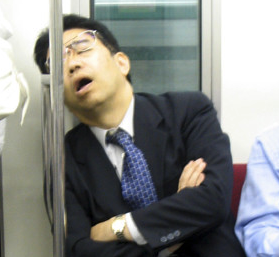
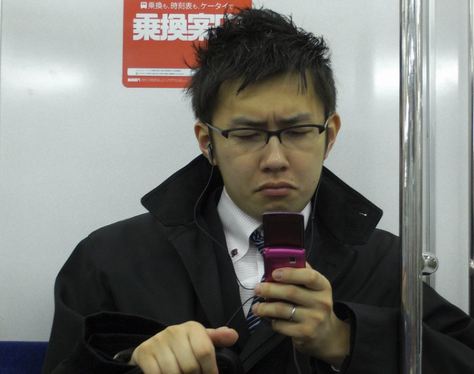

Lanping University Hangzhou, Department of Percussive Maintenance: Faculty Directory
|
 |
Siji Qiujiu | A mild-mannered man, he sleeps soundly on the subway. |
|---|---|---|
|
 |
Caoza Shouji | He's constantly frowning at his phone. |
| Xinren Leguan | His smile and optimism... gone. |